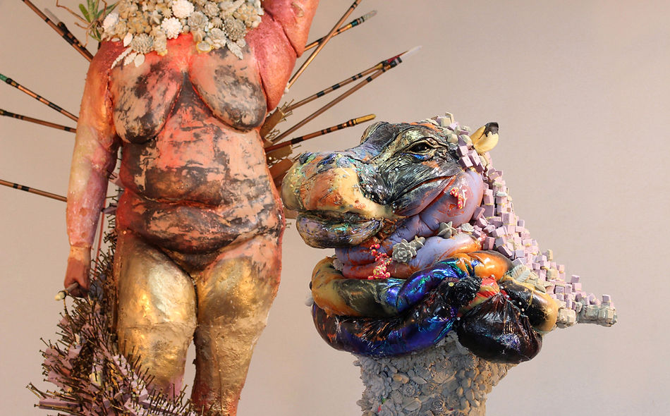
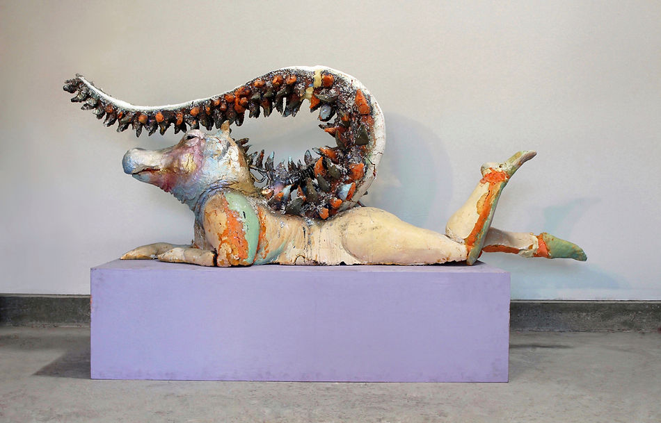

Mia Feuer: The Solar Mothers
November 7 - December 11
Saturday, November 7, 4-6PM — A vigil/regrouping/celebration of feminine power/transcendence of time/call for collective liberation + chicken soup, served by Mia all outside and socially distanced.
We imagine that the weekend, a mere 4 days after the election, will be a profound time of upheaval, possibility, or uncertainty. It will be a time to safely gather.
The exhibition can be viewed from the side walk looking in, day and night. Additionally, we will be scheduling INSIDE visits on Fridays and Saturdays half hour long appointments for single visitor or pods of up to four people.
The Solar Mothers is a growing body of fantastical figurative sculptures made by Mia Feuer. Formed from petrochemicals, found objects and trash. The Solar Mothers honor the 110 million year old petrified body of a Nodosaur discovered in the Alberta Tar Sand Strip Mines in 2011 and the Egyptian Goddess Tawaret. With the head of a hippo and tail of a serpent, Tawaret and her sisters, known as the Solar Mothers, are protectors of birthing mamas and newborn babies of all species as well as the deliverers of the sun over the horizon each morning. The bodies cast in this exhibition all belong to women the artist knows and loves, including that of Joan Keenan, the artist's best friend, who passed on October 6th 2020. She was a fierce midwife, and this exhibition is dedicated to her. It also marks a time of fiery winds of change, rage and the claiming of infinite possibility.
 